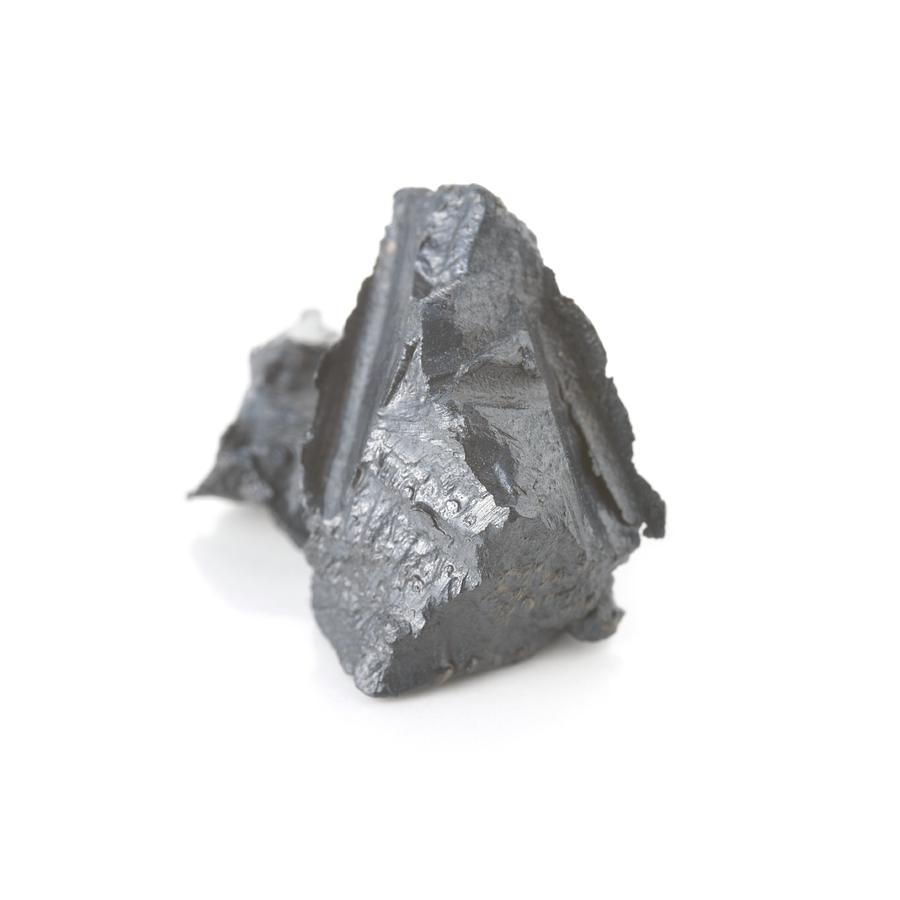

| Proprietà |
Valore |
| Nome Elemento |
Il Lantanio (La) è un elemento chimico appartenente alla serie dei lantanidi, un gruppo di metalli delle terre rare. |
| Massa Atomica |
138,9055 u |
| Numero Atomico |
57 |
| Numero di Isotopi |
Il più stabile è il La-139, utilizzato in applicazioni nucleari e scientifiche. |
| Numero di Massa (Isotopi) |
137, 138, 139 (Il più abbondante è La-139) |
| Temperatura di Fusione |
920 °C |
| Temperatura di Ebollizione |
3460 °C |
| Densità |
6,15 g/cm³ |
| Elettronegatività |
1,1 (Scala di Pauling) |
| Anno di Scoperta |
1839 (Carl Gustaf Mosander) |
| Abbondanza |
Presente in minerali come monazite e bastnasite. |
| Caratteristiche |
- Metallo bianco-argenteo, morbido e malleabile.
- Si ossida facilmente a contatto con aria e acqua.
- Possiede proprietà paramagnetiche.
|
| Applicazioni Tecnologiche |
- Ottica avanzata: utilizzato per vetri speciali di telescopi e fotocamere.
- Leghe metalliche: migliora proprietà meccaniche di alcuni metalli.
- Catalizzatori petrolchimici: impiegato nei processi di raffinazione del petrolio.
- Batterie ricaricabili NiMH: utilizzato nei veicoli ibridi e nell’elettronica.
|
| Localizzazione Giacimenti |
- Cina: maggiore produttore mondiale di terre rare.
- Stati Uniti: principalmente in California e Alaska.
- Australia: presente in minerali di monazite.
- Brasile: con alcune riserve minerarie.
|
| Effetti sulla Salute |
Non altamente tossico, può causare irritazioni se inalato. |
| Effetti sull'Ambiente |
La sua estrazione può causare contaminazione del suolo e delle acque. |
| Utilizzo nei Telefoni |
- Schermo: Migliora la qualità dei colori del vetro.
- Obiettivi della Fotocamera: Usato nelle lenti per immagini più chiare.
- Lucidatura del Vetro: Utilizzato nei composti per ottenere superfici lisce.
|
